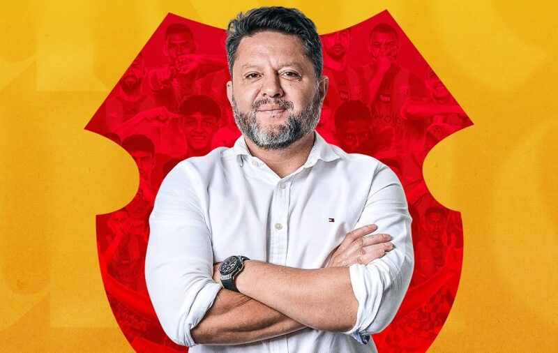

Back |
Home |
Next
--- EL INICIO DE LOS 9 AÑOS DORADOS ---

¿Como nace la idea de formar el equipo de fuerza Herediana?
La idea nace de Aquil Alí, en el momento en que el equipo está sufriendo, hay una preocupación de su parte. Así empieza a formar un grupo con exdirectivos y amigos cercanos a él. En el grupo estaban Walter Cortés, Henry Jimenez, David Patey, Orlando Moreira, estaba yo. Él nos trajo para empezar a ver como se podía rescatar al equipo. Yo sigo diciendo que el mejor presidente de Herediano ha sido Aquil Ali, mantuvo al equipo durante 10 años sin derechos de transmisión y en una situación económica difícil. (Ya se habían comprometido).
Herediano estaba en una situación mala en rentabilidad y pésima en lo deportivo. ¿Qúe tan complejo fue asumir ese reto?
Bueno, Herediano se había quitado la sequía de campeonatos y eso ayudó mucho. En eso hay que ser claro. Nosotros tomamos el equipo a finales del 2012, incluso se pagó la caja sin haber firmado el contrato, se hizo de buena fe. En ese momento empezamos a formar el equipo que fue campeón en junio del 2013 con don Marvin Solano.
Nueve años después El Herediano es una marca rentable y un equipo estable ¿Cuáles cree que fueron los pilares para conseguir esto?
Creo que el pensamiento. Somos comerciantes, somos gente de futbol, tenemos mucha experiencia, el hecho de tener tantas nacionalidades nos daba una perspectiva diferente de negocio deportivo y obviamente la pasión que le hemos metido a esto.
Jafet Soto o se ama o no ¿Cómo lo puede analizar desde la parte gerencial?
A mi lo único que me mueve para estar aquí es el amor que le tengo a esta institución, me ha dado todo. Puedo ser el único jugador que nunca cobró un solo colón al club. En la época mala, en la época de cierres, en la época dura nunca cobré. Salvo, eso sí, el tiempo que estuve con Mario Sotela, fueron solamente unos 6 meses.
Después de 6 títulos nacionales, uno de Super Copa, una Liga Concacaf y un Campeonato Nacional Femenino ¿Son estos los 9 años dorados de nuestro equipo centenario?
Por supuesto, esta es la época más gloriosa del CSH. Nadie nunca ha ganado tanto como nosotros. Evidentemente admiramos y agradecemos a todos los presidentes y las personas que pasaron por aquí. La institución que nos heredaron, la mejoramos muchísimo.
Como conocedor de fútbol, ¿Cómo se llega a ese protagonismo?
Solo retomamos el lugar que el Herediano merece, comenzamos a competir, a traer jugadores, a ser un equipo atractivo para los jugadores. Los que vienen saben que serán protagonistas, que serán campeones o estarán en finales.
¿Cómo es eso de que, quién llega a Herediano se enamora?
Vivir una final en Herediano es diferente, acá ser campeón es diferente. Se sabe que se pelea contra todo, como dicen por ahí “Si no se sufre no es Heredia”. Vea en la época moderna la gran cantidad de jugadores que se declaran heredianos: Yeltsin, Alvarado, Bryan Seguro. No se trata de pintarse el escudo, se trata de creer en el escudo.
¿Qué significa el Herediano para usted?
Significa tanto como el nacimiento de mis hijos, está a ese nivel. Lo comparo con ese sentimiento. Eso es el Herediano para mi.